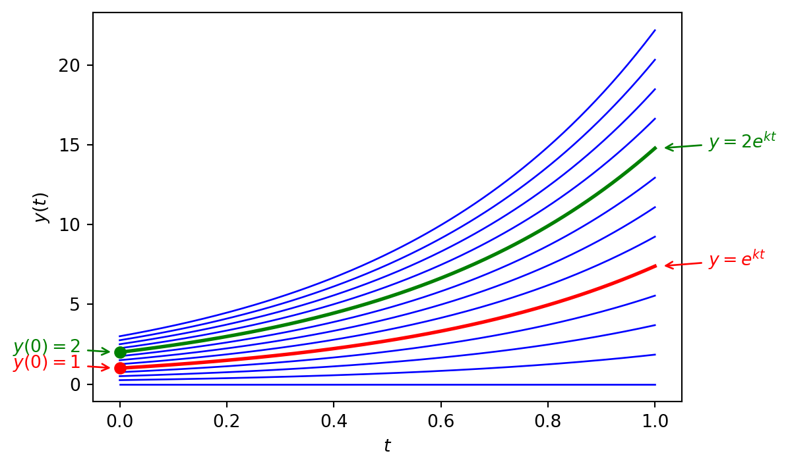
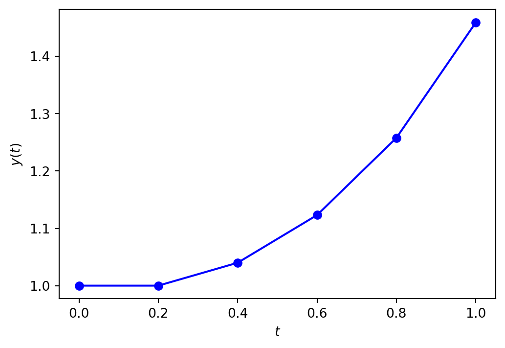
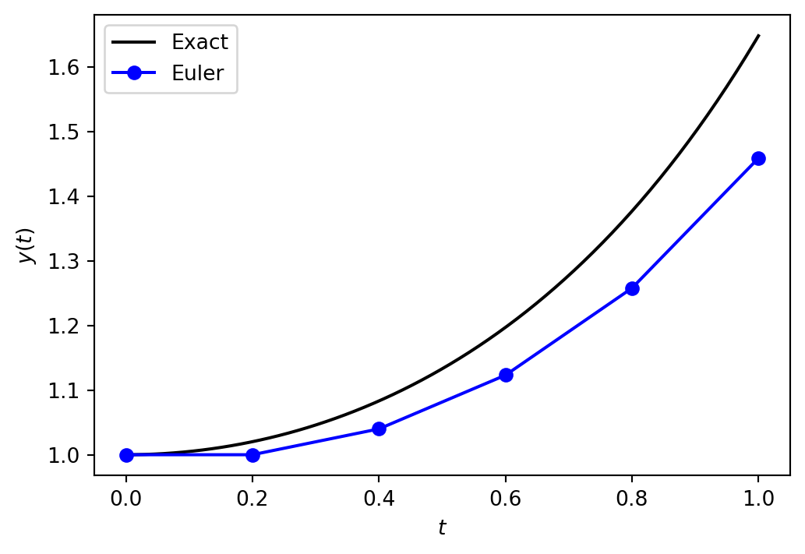
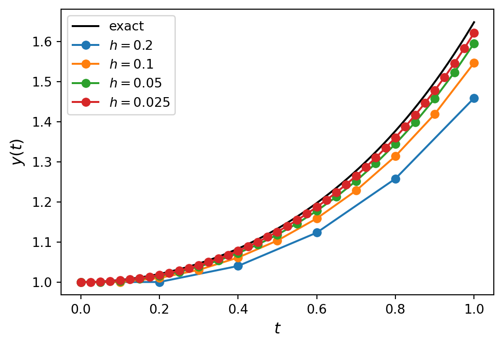
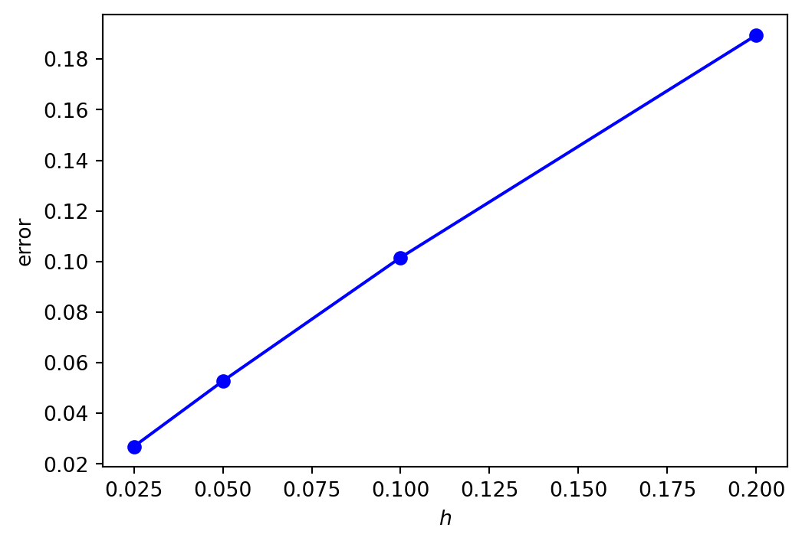
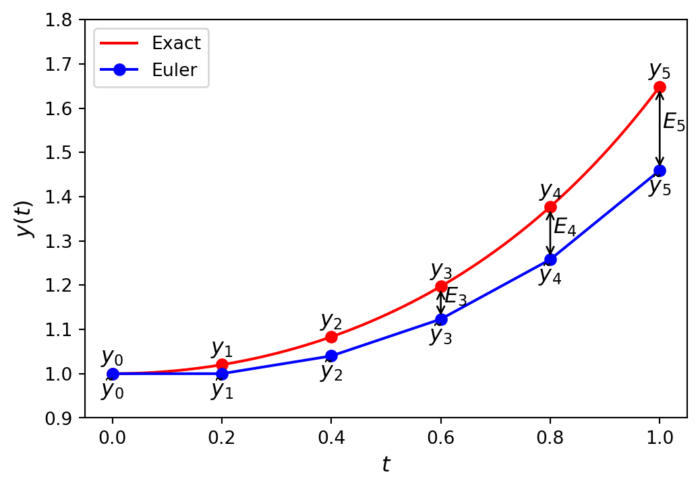
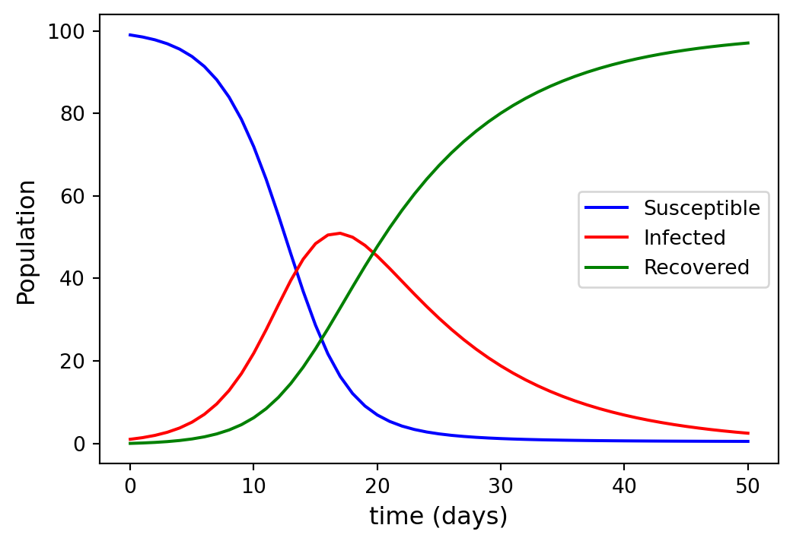
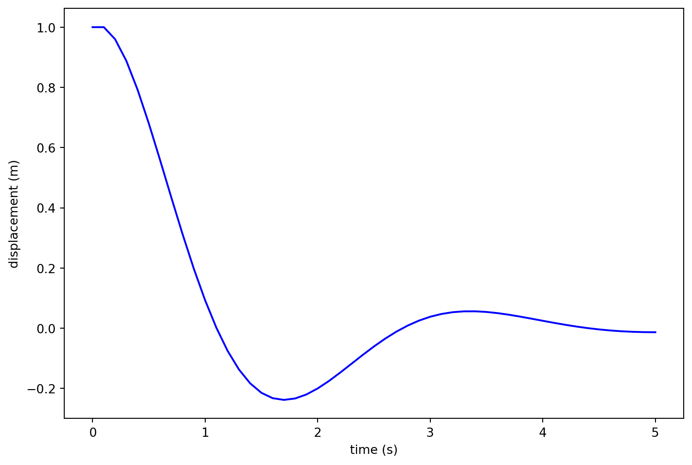

Week 1 – Ordinary Differential Equations
Computational Methods in ODEs
Dr Jon Shiach
Definition: Ordinary Differential Equation
An Ordinary Differential Equation (ODE) is an equation of the form
\[ y^{(n)}(t) = f(t, y, y', y'', \ldots, y^{(n-1)})\]
where \(t\) is an independent variable, \(y\) is a differentiable function of \(t\) and \(y'\), \(y''\) etc. are derivatives of \(y\).
The solution of an ODE is the function \(y\) that satisfies the ODE over the domain of \(t\)
For example, consider the following ODE
\[y' = ky.\]
Rewriting this using Leibniz notation and integrating both sides we have
\[ \begin{align*} \frac{\mathrm{d} y}{\mathrm{d}t} &= ky \\ \frac{\mathrm{d} y}{y} &= k \mathrm{d} t \\ \int \frac{1}{y} \mathrm{d} y &= \int k \mathrm{d} t \\ \ln (y) + c_1 &= kt + c_2 \\ \ln (y) &= kt + c_2 - c_1 \end{align*} \]
Solving for \(y\) gives
\[ \begin{align*} y &= e^{kt + c_2 - c_1} = e^{kt}e^{c_2 - c_1} = Ce^{kt}, \end{align*} \]
where \(C = e^{c_2 - c_1}\) is some constant.
The solution to \(y' = kt\) is
\[ \begin{align*} y &= Ce^{kt}, \end{align*} \]
If the solution to this ODE where \(t = 0\) is known to be \(y(0) = y_0\) then
\[ \begin{align*} y_0 &= C e^{k(0)} = C e^0 = C, \end{align*} \]
so the ODE has the solution
\[ \begin{align*} y &= y_0 e^{kt}. \end{align*} \]
- If \(y(0) = 1\), then the solution is \(y = e^{kt}\)
- If \(y(0) = 2\), then the solution is \(y = 2e^{kt}\)
- etc.
So we have a family of solutions that depend on the initial value \(y(0)\).
Definition: Initial Value Problem
An Initial Value Problem (IVP) is an ODE where the initial solution at the lower boundary of the domain is known. For example,
\[ \begin{align*} y' = f(t,y), \qquad t \in [t_0, t_{\max}], \qquad y(t_0) = y_0. \end{align*} \]
Here a first-order ODE \(y'=f(t,y)\) is defined over the domain \(t\in [t_0 , t_{\max}]\) and the initial solution \(y(t_0)\) is the known value \(y_0\).
When we speak of solving and ODE we usually mean solving an IVP.
The Euler Method
The Euler method for solving the initial value problem \(y' = f(t, y)\), \(t \in [t_0, t_{\max}]\), \(y(t_0) = y_0\) is
\[y_{n+1} = y_n + h f(t_n ,y_n),\]
where \(h = t_{n+1} - t_n\).
Derivation of the Euler Method
Consider the general first-order IVP
\[ y' = f(t, y), \qquad y(t_0) = y_0, \]
where the solution is \(y(t)\). The tangent line for \(y(t)\) where \(t = t_0\) has the gradient \(f(t_0, y_0)\).

The equation of this tangent line is
\[ y = y_0 + f(t_0, y_0) (t - t_0). \]
Approximating \(y(t_1)\) by calculating the point on the tangent where \(t = t_1\)
\[ y_1 = y_0 + f(t_0, y_0) (t_1 - t_0). \]
We can approximate \(y(t_2)\) using the the tangent line at \(t = t_1\) which has gradient of this \(f(t_1, y_1)\)
\[ y_2 = y_1 + f(t_1, y_1) (t_2 - t_1). \]
Doing similar for more points along the \(t\) domain
\[ \begin{align*} y_3 &= y_2 + f(t_2, y_2) (t_3 - t_2), \\ y_4 &= y_3 + f(t_3, y_3) (t_4 - t_3), \\ & \vdots \\ y_{n+1} &= y_n + f(t_n, y_n) (t_{n+1} - t_n). \end{align*} \]
If we use equally spaced points for \(t_0, t_1, t_2, \ldots\) such that \(t_{n+1} - t_n = h\) then the approximation of the solution at \(t_{n+1}\) is
\[ y_{n+1} = y_n + h f(t_n, y_n), \]
which is the Euler method.
Algorithm: Solving an IVP using the Euler method
Inputs A first-order ODE of the form \(y' = f(t,y)\), a domain \(t \in [t_0, t_{\max}]\), an initial value \(y(t_0) = y_0\) and a step length \(h\)
Outputs \((t_0, t_1, \ldots)\) and \((y_0, y_1, \ldots)\)
- \(nsteps \gets \left\lfloor \dfrac{t_{\max} - t_0}{h} \right\rfloor\)
- For \(n = 0, \ldots, nsteps\)
- \(y_{n+1} \gets y_n + hf(t_n, y_n)\)
- \(t_{n+1} \gets t_n + h\)
- Return \((t_0, t_1, \ldots)\) and \((y_0, y_1, \ldots)\)
Example
Calculate the solution to the following initial value problem using the Euler method with \(h = 0.2\)
\[y' = ty, \qquad t\in [0,1], \qquad y(0)=1.\]
Here the ODE function is \(f(t, y) = ty\), \(t_0 = 0\), \(y_0 = 1\) and \(h = 0.2\).
Calculate the number of steps required
\[ nsteps = \left\lfloor \frac{t_{\max} - t_0}{h} \right\rfloor = \left\lfloor \frac{1 - 0}{0.2} \right\rfloor = 5. \]
Calculating the first step
\[ \begin{align*} y_1 &= y_0 + h (t_0 y_0) = 1 + 0.2(0)(1) = 1, & t_1 &= t_0 + h = 0 + 0.2 = 0.2, \\ \end{align*} \]
Calculating the other steps
\[ \begin{align*} y_2 &= y_1 + h (t_1 y_1) = 1 + 0.2(0.2)(1) = 1.04, & t_2 &= t_1 + h = 0.2 + 0.2 = 0.4, \\ \end{align*} \]
\[ \begin{align*} y_3 &= y_2 + h (t_2 y_2) = 1.04 + 0.2(0.4)(1.04) = 1.1232, & t_3 &= t_2 + h = 0.4 + 0.2 = 0.6, \\ \end{align*} \]
\[ \begin{align*} y_4 &= y_3 + h (t_3 y_3) = 1.1232 + 0.2(0.6)(1.1232) = 1.257984, & t_4 &= t_3 + h = 0.6 + 0.2 = 0.8, \\ \end{align*} \]
\[ \begin{align*} y_5 &= y_4 + h (t_4 y_4) = 1.257984 + 0.2(0.8)(1.257984) = 1.459261, & t_5 &= t_4 + h = 0.8 + 0.2 = 1.0. \end{align*} \]
So the solution to this IVP using the Euler method is
| \(t_n\) | \(y_n\) |
|---|---|
| 0.00 | 1.000000 |
| 0.20 | 1.000000 |
| 0.40 | 1.040000 |
| 0.60 | 1.123200 |
| 0.80 | 1.257984 |
| 1.00 | 1.459261 |
Coding the Euler Method (Python)
Import NumPy and matplotlib libraries
Define Euler method function to solve an IVP
Setup IVP and solve using the euler() function.
# Define the ODE function
def f(t, y):
return t * y
# Define IVP parameters
tspan = [0, 1] # boundaries of the t domain
y0 = [1] # initial value of the solution
h = 0.2 # step length
# Solve using the Euler method
t, y = euler(f, tspan, y0, h)
# Print table of solution values
print("| t | y | ")
print("|:----:|:---------:|")
for n in range(len(t)):
print(f"| {t[n]:4.2f} | {y[n]:9.6f} |")
# Plot solution
fig, ax = plt.subplots()
plt.plot(t, y, "bo-", label="Euler")
plt.xlabel("$t$")
plt.ylabel("$y(t)$")
plt.show()Coding the Euler method (MATLAB)
Define Euler method function to solve an IVP
function [t, y] = euler(f, tspan, y0, h)
nsteps = floor((tspan(2) - tspan(1)) / h);
t = zeros(nsteps + 1, 1);
y = zeros(nsteps + 1, 1);
t(1) = tspan(1);
y(1) = y0;
for n = 1 : length(t) - 1
y(n+1) = y(n) + h * f(t(n), y(n));
t(n+1) = t(n) + h;
end
endImportant
Functions must be defined at the bottom of the script file in MATLAB.
Setup IVP and solve using the euler() function.
% Define ODE function
f = @(t, y) t * y;
% Define IVP parameters
tspan = [0, 1]; % boundaries of the t domain
y0 = 1; % initial value of the solution
h = 0.2; % step length
% Solve IVP using the Euler method
[t, y] = euler(f, tspan, y0, h);
% Print table of solution values (for loop is used to group print statements)
for i = 1 : 1
fprintf("| t | y |\n|:----:|:---------:|");
for n = 1 : length(t)
fprintf("\n| %4.2f | %9.6f | %9.6f | %8.2e |", t(n), y(n));
end
end
% Plot solution
plot(t, y, "b-o", LineWidth=2, MarkerFaceColor="b")
axis padded
xlabel("$t$", FontSize=14, Interpreter="latex")
ylabel("$y(t)$", FontSize=14, Interpreter="latex")Output
| t | y |
|:----:|:---------:|
| 0.00 | 1.000000 |
| 0.20 | 1.000000 |
| 0.40 | 1.040000 |
| 0.60 | 1.123200 |
| 0.80 | 1.257984 |
| 1.00 | 1.459261 |
Error Analysis
The exact solution to the IVP we have solved is \(y = e^{t^2/2}\).
We can calculate the absolute error between the numerical solution and the exact solution using
\[ \begin{align*} \text{error} &= | y_\text{exact} - y_\text{numerical} |. \end{align*} \]

| \(t\) | Euler | Exact | Error |
|---|---|---|---|
| 0.0 | 1.000000 | 1.000000 | 0.000000 |
| 0.2 | 1.000000 | 1.020201 | 0.020201 |
| 0.4 | 1.040000 | 1.083287 | 0.043287 |
| 0.6 | 1.123200 | 1.197217 | 0.074017 |
| 0.8 | 1.257984 | 1.377128 | 0.119144 |
| 1.0 | 1.459261 | 1.648721 | 0.189460 |
Changing the step length
Recall the Euler method
\[y_{n+1} = y_n + h f(t_n, y_n).\]
If we assume that that value of \(y_n\) has some error associated to it then the error will also be changed by \(h\) multiplied by some value.
So the smaller the value of \(h\) then the smaller the change in the error converging to zero when \(h\) is infinitesimally small.

| \(h\) | Error for \(y(1)\) |
|---|---|
| 0.200 | 0.1895 |
| 0.100 | 0.1016 |
| 0.050 | 0.0528 |
| 0.025 | 0.0269 |
The errors for \(y(1)\) have been plotted against the step length \(h\) in Figure 1.

Note that this is roughly a straight line with \(error \to 0\) as \(h \to 0\).
Big-O Notation
Definition: Big-O Notation
Let \(f(h)\) be a function then if \(f(h) = O(h^n)\)
\[\lim_{h \to 0} f(h) = Ch^n\]
for some positive constant \(C\).
If a function \(f(h)\) is \(f(h) = O(h^n)\) then this means \(f(h)\) tends to zero at least as fast as \(h^n\).
- Let \(f(h) = O(h)\), if we halve \(h\) then \(f(h)\) to also be halved since \((\frac{1}{2})^1 = \frac{1}{2}\)
- Let \(f(h) = O(h^2)\), if we halve \(h\) then \(f(h)\) would decrease by a factor of \(\frac{1}{4}\) since \((\frac{1}{2})^2 = \frac{1}{4}\)
The higher the power of \(h\) the quicker the function \(f(h)\) converges to zero as \(h\) decreases.
We approximate the error of a numerical method using \(f(h) = O(h^n)\).
Local Truncation Error (LTE)
The local truncation error, denoted by \(e_n\), is the error over a single step of a method assuming that the solution at the previous step is exact.
\[ \begin{align*} e_{n+1} &= y(t_{n+1}) - y_{n+1}. \end{align*} \]
Substituting the Euler method solution \(y_{n+1} = y_n + h f(t_n, y_n)\) gives
\[ e_{n+1} = y(t_{n+1}) - y(t_n) - h f(t_n, y(t_n)). \qquad(1)\]
Since \(y(t_{n+1}) = y(t_n + h)\), we can expand \(y(t_{n+1})\) about \(t_n\) using the Taylor series
\[ y(t_{n+1}) = y(t_n) + h y'(t_n) + \frac{h^2}{2} y''(\tilde{t_n}), \qquad(2)\]
where \(\tilde{t_n}\) is some point between \(t_{n}\) and \(t_{n} + h\). Since \(y'(t_n) = f(t_n, y_n)\), substituting equation (Equation 2) into equation (Equation 1) gives
\[ \begin{align*} e_n &= y(t_n) + h f(t_n, y(t_n)) + \frac{h^2}{2} y''(\tilde{t_n}) - y(t_n) - h f(t_n, y(t_n)) =\frac{h^2}{2} y''(\tilde{t_n}). \end{align*} \]
So the local truncation error for the Euler method is proportional to \(h^2\).
The actual value of the local truncation error will change depending on the solution to the ODE and the value of \(t\).
Assuming that the functions \(f\) and its partial derivatives \(f_t\) and \(f_y\) are bounded, we can introduce a constant \(M\) such that
\[ | e_n | \leq \frac{Mh^2}{2}. \]
This means that the worst possible truncation error for the Euler method is \(\dfrac{M h^2}{2}\).
Global Truncation Error (GTE)
The global truncation error denoted by \(E_n\), is the accumulation of the local truncation errors for the steps of the method to compute that solution from \(t=t_0\) up to \(t = t_n\)

We saw that the local truncation error at each step is at most \(\frac{Mh^2}{2}\) then after \(n\) steps the upper bound of the global truncation error is at most \(\frac{nMh^2}{2}\).
Using a constant step length \(h\) then
\[n = \frac{t_n - t_0}{h}, \]
so the upper bound of the global truncation error is
\[ E_n \leq \frac{t_n - t_0}{h} \frac{Mh^2}{2} = \frac{(t_n - t_0 )M}{2} h. \]
If \(C = \frac{(t_n - t_0 ) M}{2}\) is some positive constant then \(E_n \leq C h\) so we say that \(E_n = O(h)\).
So as the step length \(h\) decreases, the GTE will converge to zero in a linear fashion.
This confirms what we saw in the plot of the errors against step length for the Euler method (Figure 1) where the errors formed a line with a gradient of about 1.
Systems of ODEs
A system of \(N\) first-order ODEs is expressed as a set of multiple ODEs such that
\[ \begin{align*} y_1' &= f_1(t, y_1, y_2, \ldots, y_N), \\ y_2' &= f_2(t, y_1, y_2, \ldots, y_N), \\ & \vdots \\ y_N' &= f_N(t, y_1, y_2, \ldots, y_N), \end{align*} \]
where \(y_1(t), y_2(t), \ldots, y_N(t)\) are multiple dependent functions.
An IVP involving a system of ODEs requires an initial value for each equation in the system, i.e., \(y_1(t_0) = a_1\), \(y_2(t_0) = a_2\) etc. where \(a_1, a_2, \ldots, a_N\) are constants.
Solving a System of ODEs using the Euler Method
To apply a the Euler to solve a system of ODEs, we can write it in vector form \(\mathbf{y}' = f(t, \mathbf{y})\) where
\[ \begin{align*} \mathbf{y} &= \begin{pmatrix} y_1 \\ \vdots \\ y_N \end{pmatrix}, & f(t, \mathbf{y}) &= \begin{pmatrix} f_1(t, \mathbf{y}) \\ \vdots \\ f_N(t, \mathbf{y}) \end{pmatrix}. \end{align*} \]
Recall that the Euler method for solving an IVP for a single ODE is
\[ y_{n+1} = y_n + h f(t_n, y_n), \]
then for solving a system of first-order ODEs we simply replace \(y_n\) and \(f(t_n, y_n)\) with \(\mathbf{y}_n\) and \(f(t_n, \mathbf{y}_n)\)
\[ \begin{align*} \mathbf{y}_{n+1} &= \mathbf{y}_n + h f(t_n, \mathbf{y}_n). \end{align*} \]
Example: The SIR Model
The SIR model is a simple model that describes the spread of an infectious disease in a population.
The model divides the population into three compartments: those who have not yet contracted the disease but are susceptible (\(S\)) those who are infected (\(I\)) and those who have recovered and gained immunity (\(R\)).
The formulation of the model is
\[ \begin{align*} \frac{\mathrm{d}y}{\mathrm{d}t} &= -\dfrac{\beta}{N} IS, \\ \frac{\mathrm{d}y}{\mathrm{d}t} & =\dfrac{\beta}{N} IS - \gamma I, \\ \frac{\mathrm{d}y}{\mathrm{d}t} &= \gamma I, \end{align*} \]
where \(N = S + I + R\) is the total population, \(\beta\) is the infection rate in the number of people per day who become infected, and \(\gamma\) is the recovery rate at which a person who is infected recovers per day.
A disease breaks out in a population where \(\beta = 0.5\), \(\gamma = 0.1\) and \(S(0) = 99\), \(I(0) = 1\) and \(R(0) = 0\). Calculate the solution to the SIR model over the first 50 days using the Euler method with a step length of \(h = 1\).
Solution
Let \(y_1 = S\), \(y_2 = I\) and \(y_3 = R\) and writing the SIR model in vector form we have
\[ \begin{align*} \mathbf{y} &= \begin{pmatrix} S \\ I \\ R \end{pmatrix} = \begin{pmatrix} y_1 \\ y_2 \\ y_3 \end{pmatrix}, & f(t, \mathbf{y}) &= \begin{pmatrix} -\dfrac{\beta}{N} IS \\ \dfrac{\beta}{N} IS - \gamma I \\ \gamma I \end{pmatrix} = \begin{pmatrix} -\dfrac{\beta}{N} y_1 y_2 \\ \dfrac{\beta}{N} y_1 y_2 - \gamma y_2 \\ \gamma y_3 \end{pmatrix}. \end{align*} \]
The initial conditions are \(\mathbf{y}_0 = (99, 1, 0)\) and \(N = 100\), \(\beta = 0.5\), \(\gamma = 0.1\) and \(\frac{\beta}{N} = 0.05\).
\[ \begin{align*} \mathbf{y}_1 &= \mathbf{y}_0 + h f(t_0, \mathbf{y}_0) = \begin{pmatrix} 99 \\ 1 \\ 0 \end{pmatrix} + 1 \begin{pmatrix} -0.005 (99)(1) \\ 0.005 (99)(1) - 0.1(0) \\ 0.1(0) \end{pmatrix} = \begin{pmatrix} 98.505 \\ 1.395 \\ 0.1 \end{pmatrix}, \\ \\ \mathbf{y}_2 &= \mathbf{y}_1 + h f(t_1, \mathbf{y}_1) = \begin{pmatrix} 98.505 \\ 1.395 \\ 0.1 \end{pmatrix} + 1 \begin{pmatrix} -0.005 (98.505)(1.395) \\ 0.005 (98.505)(1.395) - 0.1(0.1) \\ 0.1(0) \end{pmatrix} = \begin{pmatrix} 97.8179 \\ 1.9426 \\ 0.2395\end{pmatrix}, \end{align*} \]
The plot of the solution to the SIR model over the first 50 days is shown in Figure 2.

Code (Python)
Define the SIR model function, setup the IVP and solve using the Euler method.
# Define SIR model
def SIR(_, y):
S, I, R = y
N = S + I + R
dS = -beta / N * I * S
dI = beta / N * I * S - gamma * I
dR = gamma * I
return np.array([ dS, dI, dR ])
# Define IVP parameters
tspan = [0, 50] # boundaries of the t domain
y0 = [99, 1, 0] # initial values
beta, gamma = 0.5, 0.1 # Model parameters
h = 1 # step length
# Solve the IVP using the Euler method
t, y = euler(SIR, tspan, y0, h)
# Plot solution
fig, ax = plt.subplots()
plt.plot(t, y[:,0], "b-", label="Susceptible")
plt.plot(t, y[:,1], "r-", label="Infected")
plt.plot(t, y[:,2], "g-", label="Recovered")
plt.xlabel("time (days)")
plt.ylabel("Population")
plt.legend()
plt.show()Code (MATLAB)
Define the SIR model function, setup the IVP and solve using the Euler method.
% Define IVP parameters
tspan = [0, 50]; % boundaries of the t domain
y0 = [99, 1, 0]'; % initial values [S, I, R]
beta = 0.5; % infection rate
gamma = 0.1; % recovery rate
h = 1; % step length
% Solve the IVP using the Euler method
[t, y] = euler(@(t, y)SIR(t, y, beta, gamma), tspan, y0, h);
% Plot solution
plot(t, y(:, 1), 'b-', LineWidth=2)
hold on
plot(t, y(:, 2), 'r-', LineWidth=2)
plot(t, y(:, 3), 'g-', LineWidth=2)
hold off
xlabel('$t$', Fontsize=14, Interpreter='latex')
ylabel('$y$', Fontsize=14, Interpreter='latex')
legend('Susceptible', 'Infected', 'Recovered', Location="east")
axis paddedHigher-order ODEs
The Euler method can only be used to solve first-order ODEs.
For higher order ODEs we rewrite them as system of first-order ODEs and apply the Euler method to solve the system.
For example consider the \(N\)-th order ODE
\[ y^{(N)} = f(t, y, y', y'' ,\ldots ,y^{(N-1)}). \]
If we introduce functions \(y_1(t), y_2(t), \ldots, y_N(t)\) where \(y_1=y\), \(y_2 =y'\), \(y_3 =y''\) and so on then
\[ \begin{align*} y_1' &= y_2,\\ y_2' &= y_3,\\ &\vdots \\ y_N' &= f(t, y_1 , y_2 , y_3 , \ldots, y_{N-1}). \end{align*} \]
Example: Mass-spring-damper Model
A mass-spring-damper model consists of objects connected via springs and dampers. A simple example of the application of a model is a single object connected to a surface is shown in Figure 3.

The displacement of the object over time can be modelled by the second-order ODE
\[ m \ddot{y} + c \dot{y} + k y = 0, \]
where \(y\) represents the displacement of the object, \(\dot{y}\) represents the change in the displacement over time (i.e., velocity), \(m\) represents the mass of the object, \(c\) is the damping coefficient and \(k\) is a spring constant based on the length and elasticity of the spring.
An object of mass 1 kg is connected to a dampened spring with \(c = 2\) and \(k = 4\). The object is displaced by 1m and then released.
Use the Euler method to compute the displacement of the object over the first 5 seconds after it was released.
Solution
Let \(y_1 = y\) and \(y_2 = \dot{y}\) then we have the system of two first-order ODEs
\[ \begin{align*} \dot{y}_1 &= y_2, \\ \dot{y}_2 &= \frac{1}{m}(- c y_2 - k y_1). \end{align*} \]
Since \(m = 1\), \(c = 2\) and \(k = 4\) then writing the system in vector form \(\dot{\mathbf{y}} = f(t, \mathbf{y})\) gives
\[ \begin{align*} \mathbf{y} &= \begin{pmatrix} y_1 \\ y_2 \end{pmatrix}, & f(t, \mathbf{y}) &= \begin{pmatrix} y_2 \\ -2y_2 - 4y_1 \end{pmatrix}. \end{align*} \]
The initial conditions are \(y_1 = 1\) (displacement) and \(y_2 = 0\) (velocity of the object).
Using the Euler method with a step length of \(h = 0.1\)
\[ \begin{align*} \mathbf{y}_1 &= \mathbf{y}_0 + h f(t_0, \mathbf{y}_0), \\ &= \begin{pmatrix} 1 \\ 0 \end{pmatrix} + 0.1 \begin{pmatrix} 0 \\ -2(0) - 4(1) \end{pmatrix} = \begin{pmatrix} 1 \\ -0.04 \end{pmatrix}, & t_1 &= t_0 + h = 0 + 0.1 = 0.1, \end{align*} \]
\[ \begin{align*} \mathbf{y}_2 &= \mathbf{y}_1 + h f(t_1, \mathbf{y}_1), \\ &= \begin{pmatrix} 1 \\ -0.04 \end{pmatrix} + 0.1 \begin{pmatrix} -0.04 \\ -2(-0.04) - 4(1) \end{pmatrix} = \begin{pmatrix} 0.96 \\ -0.72 \end{pmatrix}, & t_2 &= t_1 + h = 0.1 + 0.1 = 0.2, \end{align*} \]
\[ \begin{align*} \mathbf{y}_3 &= \mathbf{y}_2 + h f(t_2, \mathbf{y}_2), \\ &= \begin{pmatrix} 0.96 \\ -0.72 \end{pmatrix} + 0.1 \begin{pmatrix} -0.72 \\ -2(-0.72) - 4(0.96) \end{pmatrix} = \begin{pmatrix} 0.888 \\ -0.96 \end{pmatrix}, & t_3 &= t_2 + h = 0.2 + 0.1 = 0.3. \end{align*} \]

Recap
- An ODE is an equation involving an independent variable (\(t\)), a differentiable function \(y(t)\) and its derivatives
- An Initial Value Problem (IVP) is an ODE that has known initial values \(y(0)\)
- The Euler method is a simple first-order method that solves IVPs
- The Local Truncation Error (LTE) is the error over a single step assuming the previous values were exact
- The Global Truncation Error (GTE) is the errors accumulated over multiple steps
- The accuracy of a method is given by \(O(h^n)\) which is the rate at which the GTE tends to zero as \(h \to 0\)
- The accuracy of the Euler method is \(O(h)\) so it is known as a first-order method
- Higher order ODEs can be rewritten as a system of first-order ODEs and solved using the Euler method (and other ODE solvers)